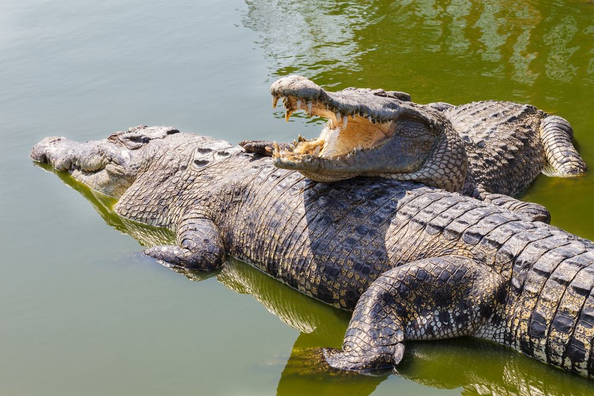

Animals
Saving wildlife is crucial for maintaining the balance of our ecosystems and preserving the beauty and diversity of our planet. Here are some ways you can contribute to wildlife conservation:
1. Support Conservation Organizations: Many organizations work tirelessly to protect and preserve wildlife habitats. Consider donating to reputable conservation organizations or volunteering your time to support their efforts.
2. Reduce Your Ecological Footprint: Make sustainable choices in your everyday life. Conserve water, reduce energy consumption, recycle, and minimize waste. By reducing your ecological footprint, you help protect wildlife habitats from destruction and pollution.
3. Choose Sustainable Products: Be mindful of the products you consume. Support companies that prioritize sustainable practices and avoid products derived from endangered species or destructive practices like illegal logging or overfishing.
4. Educate Yourself and Others: Learn about endangered species, their habitats, and the threats they face. Share your knowledge with others to raise awareness about the importance of wildlife conservation.
5. Advocate for Stronger Environmental Policies: Stay informed about environmental issues and support policies that protect wildlife and their habitats. Write letters to your elected officials, sign petitions, and participate in peaceful demonstrations to advocate for stronger conservation measures.
6. Engage in Responsible Tourism: When traveling, choose eco-friendly accommodations and tour operators that prioritize wildlife conservation. Avoid activities that exploit or harm animals and support responsible wildlife tourism initiatives.
7. Plant Native Species: Create wildlife-friendly habitats in your own backyard by planting native plants. Native plants provide food and shelter for local wildlife, helping to restore and maintain biodiversity.
8. Reduce Chemical Use: Minimize the use of pesticides and chemical fertilizers in your garden. These chemicals can harm wildlife, including birds, insects, and other beneficial creatures.
9. Support Sustainable Fishing and Farming Practices: Choose sustainably sourced seafood and support farmers who use environmentally friendly practices. This helps protect aquatic ecosystems and reduces the negative impact on marine wildlife.
10. Be a Responsible Pet Owner: If you have pets, ensure they are spayed or neutered to prevent overpopulation. Keep cats indoors to protect local bird populations, and never release non-native species into the wild.
11. Participate in Citizen Science Projects: Contribute to scientific research and conservation efforts by participating in citizen science projects. These initiatives allow individuals to collect data and contribute valuable information to researchers.
12. Encourage Others to Take Action: Inspire others to join you in wildlife conservation efforts. Share information on social media, organize community events, or start a conversation with friends and family about the importance of protecting wildlife